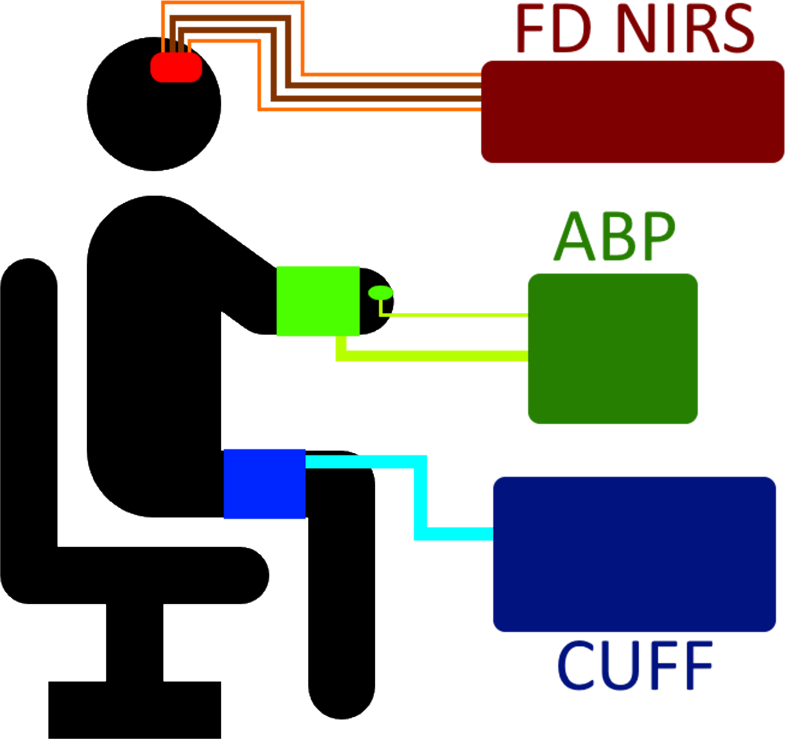
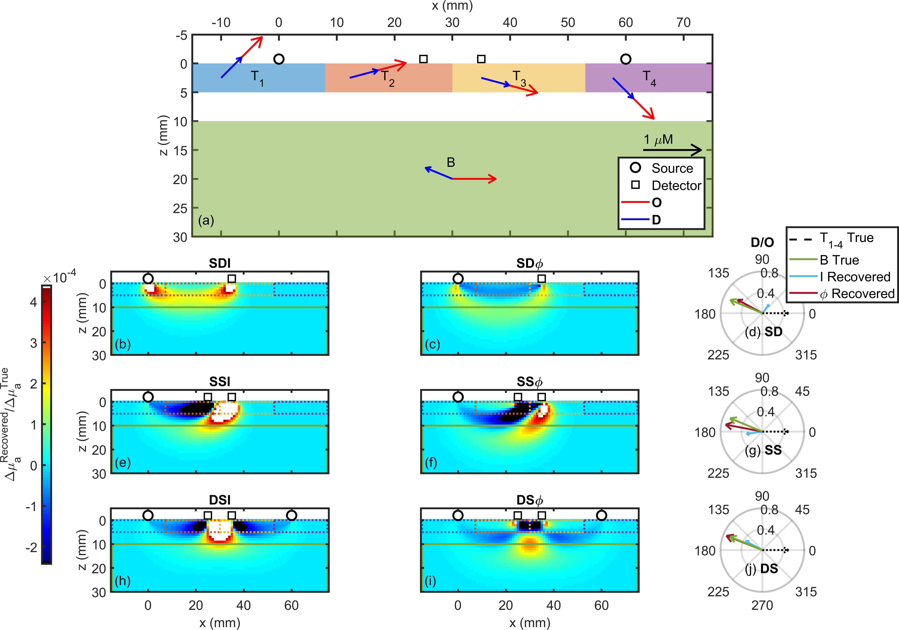
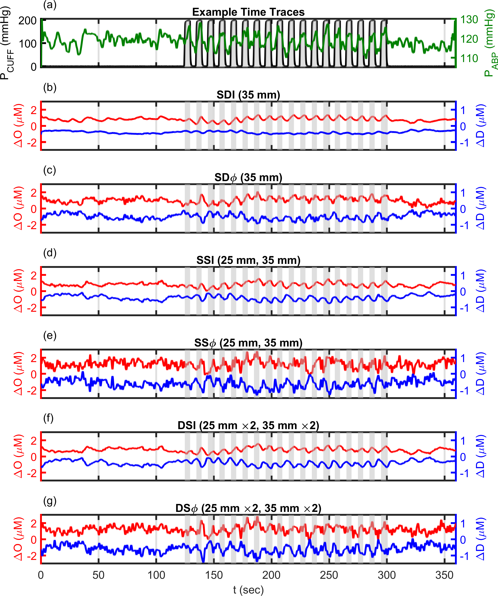

Point Measurements with Dual-Slope
Point Measurements with Dual-Slope
Methods Used in Point Dual-Slope Work
Summary of Experimental Parameters

Note 1: This setup can be found as Figure 1 in .

T1,
Blue), Top 2 (T2, Orange), Top 3
(T3, Mustard), Top 4
(text4, Purple), and Bottom (B,
Green). (b)(c)(e)(f)(h)(i) sensitivity to absorption change (𝒮) maps for: (b) Single-Distance (SD)
Intensity (I),
(c) SD phase (φ),
(e) Single-Slope (SS) I, (f) SS
φ, (h) Dual-Slope (DS)
I, and (i) DS
φ measurements. (d)(g)(j)
Comparison of true phasor ratio D/O (D̃/Õ) for each of the 5 regions
to the D̃/Õ that would be measured
using I [Cyan] or φ
[Maroon] data with the: (d) SD, (g) SS, or
(j) DS method.Note 1: These results can be found as Figure 3 in .
Note 2: Extents of the five regions, their true phasor values, and other parameters can be found in Table [tab:JBP_A4].
Note 3: Methods for this simulation are shown in Appendix [app:simSigFromSen].

Note 1: These results can be found as Figure 2 in .
Note 2: All signals lowpass filtered to 0.2 Hz, linearly detrended, and shifted by an arbitrary offset for visualization.
The first in vivo DS experiments utilized point measurements.1 These results were published in . In this case, data were collected from 4 healthy human subjects, 3 females and 1 male. FD NIRS data was collected using the Imagent whose parameters are stated in Section [ch:shortLong:sec:MDmethExpPara]. One DS probe was used with the arrangement shown in Figure [fig:DSset] with ρs of 25 mm, & 35 mm. During the experiment ABP oscillations were induced at 0.1 Hz using either thigh cuff inflation (Figure 1.1). The duration of the oscillation was 3 min. These oscillations will be discussed in more detail in Part [prt:cereHemo]. This full experiment lasted 6 min.
Analysis Overview
The work in also utilized the methods in Appendix [app:simSigFromSen] to simulate recovered phasors. Briefly, this was done simulating a heterogeneous set of BV oscillations in a superficial layer, which has been observed , and a homogeneous BF dominated oscillation in a deep layer. The motivation for these phasor relationships is explained in Chapter [ch:CHSintro]. 𝒮 for every data-type in the DS probe was used to simulate the recovered apparent phasors given these simulated heterogeneous oscillations. The overall physiological meaning of this is discussed in Part [prt:cereHemo]. The parameters used to setup these simulations are shown in Table [tab:JBP_A4].
This work culminated in to presenting in vivo temporal DS traces for the first time. For this, the baseline calibrated slopes of ln(ρ²I) and φ versus ρ were measured using the SC method applied to DS measurements. Then, absolute μa and μ′s using the linear slopes method in Appendix [app:absOptPropMeas] were calculated. These absolute properties were used with the methods in Appendix [app:dmuaMeas] to retrieve temporal traces of Δμa which where converted to ΔO and ΔD using the methods in Appendix [app:recChrom]. For the purpose of this chapter, only these temporal traces of ΔO and ΔD are shown. However, further CHS phasor analysis (Appendices [app:detCoh]&[app:phasors]) was also done, whose results are shown in Chapter [ch:invivoCereHemo].
Summary of Point Dual-Slope Results
Dual-Slope Phasor Simulations
Figure 1.2(b)(c)(e)(f)(h)(i) shows the 𝒮 regions of SD I, SD φ, SS I, SS φ, DS I, and DS φ which were previously shown in detail in Figures [fig:DSsenSDsenMap],[fig:DSsenSSsenMap],&[fig:DSsenDSsenMap]. Using these 𝒮 maps, we simulated 5 regions of actual (so-called true) hemodynamic oscillations of Õ and D̃, and we computed the apparent measured (so-called recovered) phasor for each method. The goal of these simulations was to provide an example of how the 𝒮 of the different data-types result in different measurements when the dynamics are heterogeneous. Figure 1.2(a) shows the different regions featuring hemodynamic oscillations, with 4 superficial regions and 1 deep region. This configuration models a heterogeneous superficial layer (which may be considered scalp), an intermediate non-oscillating layer, and a homogeneous bottom layer (which may be considered brain). Figure 1.2(d)(g)(j) shows the recovered and true D̃/Õ. Note that all superficial regions have the same D̃/Õ (despite having different absolute Õ and D̃). In general, SD I dose not accurately recover the oscillations in the deep region, while all φ measurements are relatively successful in doing that. All I measurements underestimate the amplitude of D̃/Õ. SS measurements are affected by the superficial heterogeneity and do not reconstruct the phase of D̃/Õ well. Overall, DS φ is the most successful, closely reconstructing the amplitude and phase of D̃/Õ in the deeper region.
These simulation results (Figure 1.2) show a deeper sensitivity for φ over I regardless of the method (SD, SS, DS). Furthermore, they also show that DS has less superficial 𝒮 than SD and SS. This is consistent with the development of the theory of DS . As previously discussed in Chapters [ch:shortLong]&[ch:DSintro], slope methods (when compared to SD) in general have been shown to be less sensitive to homogeneous superficial layers using the phase in FD NIRS . Experimental results also back up this conclusion. In TD NIRS, higher moments of the time-of-flight distribution (⟨t⟩ or the 1st moment, and variance or the 2nd moment) show deeper 𝒮 and less 𝒮 to superficial layers compared to the 0th moment (id est the average I) . Furthermore, in functional studies, the ⟨t⟩ has been shown to have better correlation with fMRI activation signals . In FD NIRS, φ has been used to measure functional brain activation at shorter ρ and to show less 𝒮 to superficial hemodynamics . We observe that at the fmod typically used in FD NIRS (100 MHz–150 MHz) φ is proportional to the 1st moment of the photon time-of-flight distribution (\(\phi \approxeq 2\pi f_{\mathrm{mod}} \langle t \rangle\)). Therefore, the intuition from the TD studies may be applied to our FD studies with φ. Overall, these simulations further reinforce the previous literature regarding SS and ⟨t⟩, and also the previous discussions in Chapters [ch:shortLong]&[ch:DSintro].
First in Vivo Dual-Slope Results
Figure 1.3 represents the first in vivo time traces acquired using the DS method. The experiment was a standard CHS experiment with 0.1 Hz cuff oscillations. The oscillations at the pneumatic thigh cuff frequency are visible during the oscillation period of all the ΔO traces. However, this is not true for ΔD which does not have clear oscillations for SD I. Other data-types however do show visible oscillations in ΔD with DS φ having large oscillations is both ΔO and ΔD. This is even more evince that DS and φ data-types have advantages over SD and I which are common in NIRS measurements . As stated in previous sections, full physiological interpretation and phasor analysis of the CHS results will be discussed in Part [prt:cereHemo].
Point measurement meaning, a temporal trace was acquired for each Dual-Slope (DS) set, and no sort of image reconstruction was done.↩︎